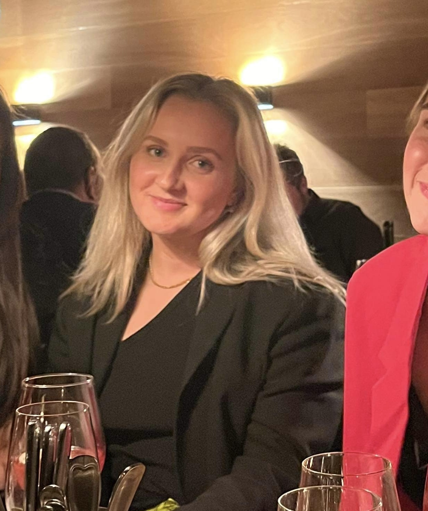

Om mig

Hvem er jeg?
Mit navn er Josephine Bjørn Christiansen og er 22 år gammel, og studerer multimediedesign på 1. semester. Oprindeligt er jeg opvokset i Farum, men bor nu i Hellerup. Jeg er en positiv og imødekommende person, og er ikke bange for at prøve nye ting af. I min fritid arbejder jeg i H&M og elsker at bruge en masse tid med mine venner og familie. Jeg sætter stort pris på positiv energi, både i sociale, studie og arbejdsrelaterede sammenhænge, da dette altid hjælper mig med at opnå den bedst mulige hverdag, samt produktivitet og arbejdsindsats.
CV
- Viden inden for grundlæggende web
- Viden inden for grundlæggende UX
- Viden inden for grundlæggende animation
- Viden inden for grundlæggende